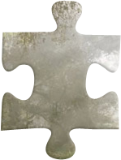
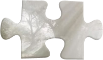
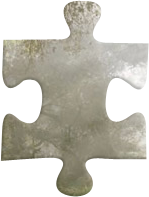
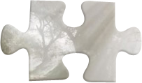

CSS Homework: task 2
Chaika Anna
Ознайомлення з css-правилом "position"
Це правило встановлює спосіб позиціювання елементу відносно вікна браузера чи інших об'єктів на веб-сторінці.Положення элементу задається атрибутами left, top, right і bottom відносно краю вікна браузера.
Приклад блоку, в якому використовуються значення absolute і relative властивості position:


 





Значення властивості position
Ця властивість може мати чотири значення: static, relative, absolute, fixed.
absolute - Вказує, що елемент абсолютно зпозиціонований, при цьому елементи відображаються на веб-сторінці ніби абсолютно спозиціонованого елемента і немає. Положення елемента задається значеннями left, top, right и bottom, також на положення впливає значення властивості position батьківського елементу. Так, якщо у батьківського елементу значення position встановлено як static чи батька немає, то відлік координат ведеться від краю вікна браузера. Якщо у батька значення position задано як fixed, relative чи absolute, то відлік координат ведеться від краю батьківського элементу.
fixed - За своєю поведінкою це значення близке до absolute, але на відміну від нього привязується до вказаної властивостями left, top, right и bottom точки на екрані і не міняє свого положення при прокрутці веб-сторінки.
relative - Положення элемента встановлюється відносно його початкового положення. Додавання властивостей left, top, right и bottom міняє позицію елементу і зміщує його в ту чи іншу сторону від початкового положення.
static - Елементи відображаються як звично. Використання властивостей left, top, right и bottom не призводить до ніяких змін.
inherit - Наслідує значення батьківського елементу.